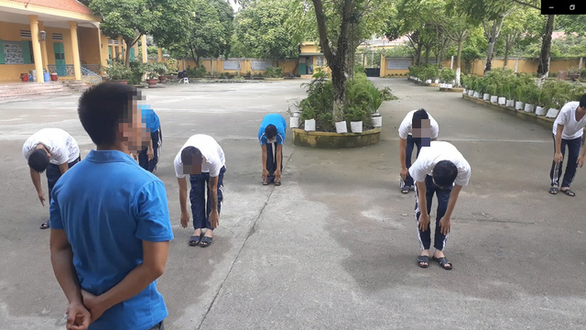

Admin
Ngày 1 tháng 1 năm 2019
Những người 'thầy' đặc biệt ở trại cai nghiện
TTO - Dù không hề dễ dàng, nhưng một số người đã nỗ lực thoát vòi bạch tuộc chết chóc của ma túy . Họ ở lại trung tâm cai nghiện để giúp đỡ người khác, bởi có đứt tay mới biết đau, có tận cùng khốn khổ mới thấu tác hại khủng khiếp của ma túy…